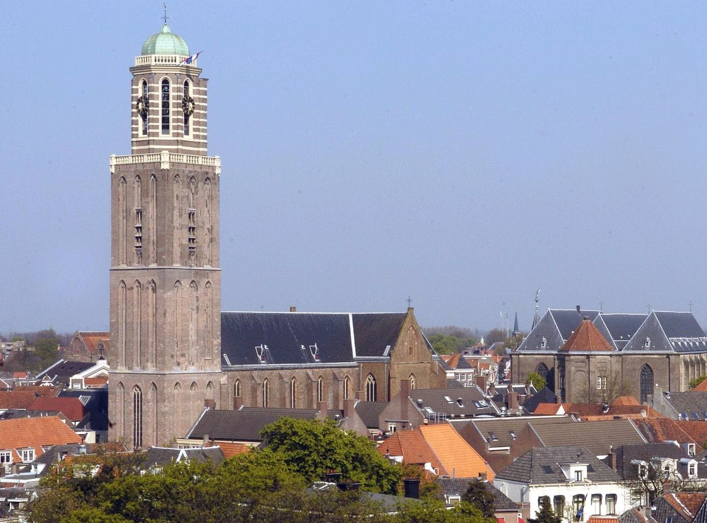

 Hallo, op deze site kan je alles te weten komen over de Peperbus, denk dan aan dingen als wanneer het gebouwd is en het aantal bezoekers. Veel plezier met het rondkijken op deze geweldige site. De peperbus is een grote toren in Zwolle, het is gebouwd in de 18e eeuw, vandaag de dag wordt het vooral gebruikt voor toerisme. Lees hier meer